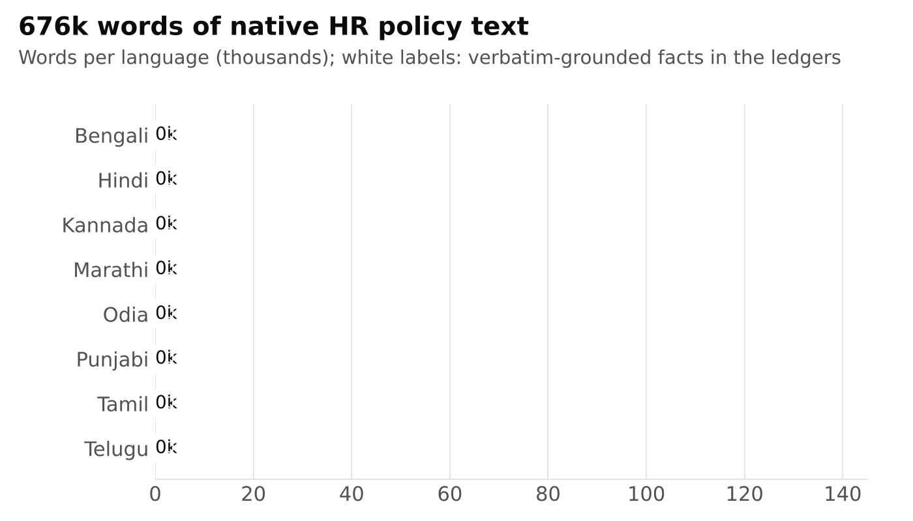
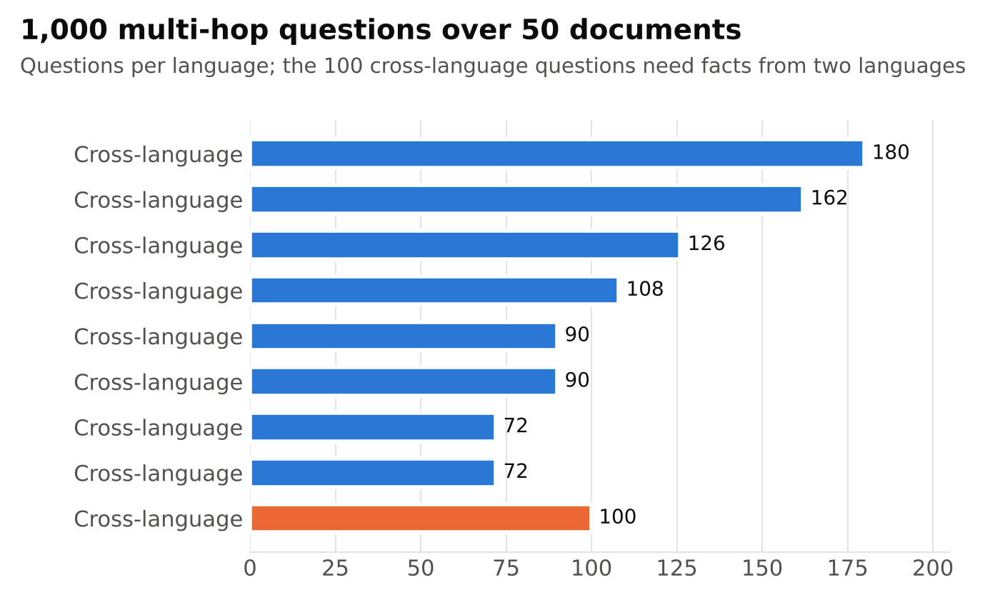
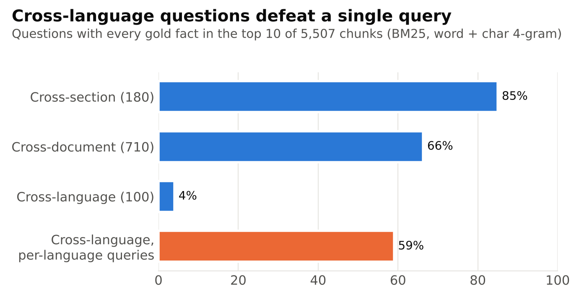
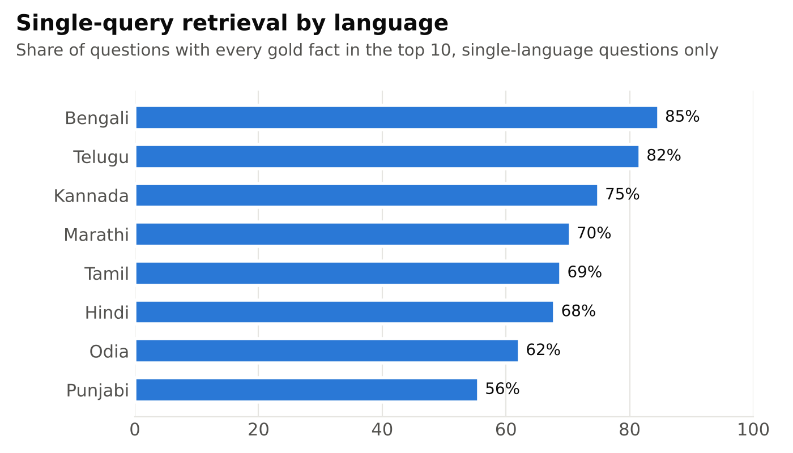
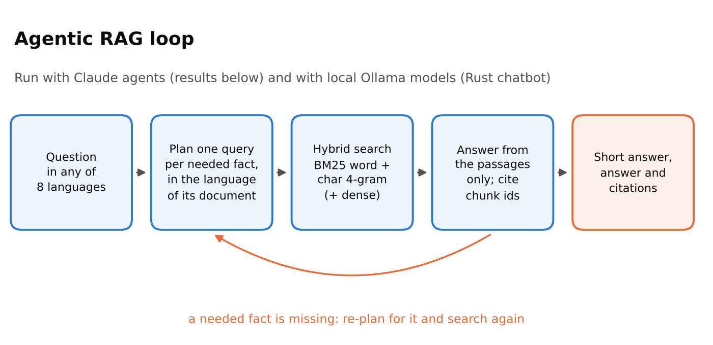

Most question-answering benchmarks for Indian languages are short passages, often translated from English, with the answer sitting in one place. Real enterprise questions are different. An employee asks something like "if I am confirmed after probation, how much longer before I can claim the welfare fund?" The answer needs two clauses from two long policy documents, and one small calculation. In a multilingual company, the two documents may not even be in the same language.
This project builds a benchmark for exactly that situation, measures how far retrieval and an agentic RAG system get on it, and provides a Rust chatbot that runs the same evaluation on a laptop with local open models. Everything (documents, questions, code, predictions and logs) is in the repository.
1. The corpus: 50 policy manuals, written natively
The documents are the HR policies of one fictional company, Suryodaya Integrated Solutions Pvt. Ltd. A fictional company keeps the facts out of any model's training data, so a correct answer has to come from retrieval rather than memory.
- 50 documents in 8 languages: Tamil 10, Hindi 9, Telugu 7, Marathi 6, Odia 5, Punjabi 5, Bengali 4 and Kannada 4.
- 675,913 words in total, 12k to 17k words per document, with 3,444 page markers so answers can be traced to a page.
- Written natively, not translated. Each document is written in its own language with its own terminology and conventions. Numbers follow local practice: Bengali, Devanagari, Gurmukhi and Odia documents mostly use their native digits, while Tamil, Telugu and Kannada documents mostly use Western digits, so a system must normalise digits to compare figures.
- Topics span the employee life cycle: recruitment, onboarding, probation, compensation and payroll, leave, attendance and overtime, travel, remote work, performance and promotion, training, discipline and inquiries, grievances, harassment prevention, whistleblowing, benefits, loans, retirement funds, workplace safety, IT use and separation.
Every document comes with a fact ledger: 6,315 gold facts in total, each with a subject, an aspect, a value and unit, the section and page, and an evidence sentence copied verbatim from the document. The ledgers make the benchmark checkable: every question is built from ledger facts, and every fact can be located in the text.
Five topic-collision pairs add a trap. Pairs of documents in different languages share a topic (for example, recruitment in Bengali and recruitment in Telugu) but none of their content. A retriever that matches on topic instead of on the fact will pull the wrong document.

2. The test set: 1,000 multi-hop questions

Every question needs at least two facts. The hop types are:
- Cross-document (710): two facts from two documents in the same language.
- Cross-section (180): two facts from different sections of one document.
- Cross-language (100): one fact from each of two documents in different languages, asked in one of them.
- Within-section (10): two distinct facts from the same section.
Each record has the question, a short reference answer, a full reference answer, the source sections and the supporting facts (which resolve to ledger entries). Questions never state the values they test, so the answer cannot be read off the question. Two examples:
कार्यपालक-स्तर के कर्मी की परिवीक्षा-अवधि कितनी है, और कल्याण कोष के लाभों (अनुग्रह, शिक्षा एवं विवाह सहायता) के लिए न्यूनतम कितनी सेवा-अवधि आवश्यक है? परिवीक्षा पूरी होते ही स्थायी हुए कर्मी को इन लाभों के लिए स्थायीकरण के बाद कितना अतिरिक्त समय प्रतीक्षा करनी होगी?
What is the probation period of an executive-level employee, and what minimum service is needed for the welfare-fund benefits (ex gratia, education and marriage assistance)? How much longer must an employee confirmed at the end of probation wait for these benefits?
Reference short answer: ६ माह अतिरिक्त (परिवीक्षा ६ माह, कल्याण कोष हेतु १२ मास) (6 more months: probation 6 months, welfare fund 12 months)
Two Hindi documents: the probation rules (section 4.1) and the benefits guide (section 4.3). Neither fact is enough alone.
সূর্যোদয় ইন্টিগ্রেটেড সলিউশনস-এর বাংলা নিয়োগ নির্দেশিকা অনুযায়ী সম্পূর্ণ পূর্বতন কর্মজীবন যাচাই প্রক্রিয়া সম্পন্ন করার জন্য বরাদ্দ সময়সীমা কত, এবং তেলুগু নির্দেশিকায় উল্লিখিত নেপথ্য ধৃবীকরণ (నేపథ్య ధృవీకరణ)-র প্রমিত সময়সীমার (సాధారణ కాలపరిమితి) তুলনায় তা কত কার্যদিবস বেশি?
Under the Bengali recruitment guide, what is the time limit for completing the full background verification, and how many working days longer is it than the standard time limit for background verification in the Telugu guide?
Reference short answer: ১৪ কার্যদিবস; তেলুগু ১০ কার্যদিবসের চেয়ে ৪ কার্যদিবস বেশি (14 working days; 4 working days more than Telugu's 10)
A Bengali question that needs a Bengali clause (section 16.8) and a Telugu clause (section 8.3). The Telugu fact has to be found in Telugu.
3. How far does retrieval get? And an agentic RAG baseline
Retrieval with a single query
The documents are split along their own sections and subsections (at most 220 words per chunk, each chunk carrying its document title and heading path), which gives 5,507 chunks. Retrieval is BM25 over two views of the text, word tokens and character 4-grams, fused by reciprocal rank. Character n-grams help with the rich morphology and compounding of Indian languages. No embedding model is needed for this baseline.
A lesson worth sharing: a tokenizer bug almost hid the result. Python's \w does not treat Indic
vowel signs (matras) as word characters, so re.findall(r"\w+", text) silently cuts Hindi or Tamil words
into fragments. Fixing the token pattern to include the Indic blocks doubled the share of questions whose evidence is
fully retrieved (from 30% to 64% in the top 10).

| Questions | n | Fact recall@5 | Fact recall@10 | All facts@10 | All facts@20 |
|---|---|---|---|---|---|
| All 1,000 questions | 1000 | 71% | 81% | 64% | 73% |
| Cross-section | 180 | 85% | 92% | 85% | 92% |
| Cross-document | 710 | 70% | 82% | 66% | 78% |
| Cross-language | 100 | 49% | 52% | 4% | 7% |
| Cross-language, one query per language | 100 | 68% | 77% | 59% | 69% |
Two things stand out. Single queries find all the evidence for about two thirds of questions, and much less when the facts are spread across documents. For cross-language questions a single query almost never works (4% in the top 10): lexical retrieval finds the clause in the question's own language and misses the other one. Splitting the search into one query per language raises this to 59%. Multi-hop, multilingual questions need a system that plans its searches.

Agentic RAG

In the agentic setup, a reasoning agent gets the question and one tool: the search engine above, with optional language and document filters. It breaks the question into the facts it needs, writes each query in the language of the document likely to hold that fact, reads the passages, cites the chunks it used, and gives a short and a full answer. The agents were Claude instances working in batches of 40 questions; a separate set of judge instances graded each answer against the reference as correct, partial or incorrect.
| Group | n | Correct / partial / wrong | Strict accuracy | Numeric match | All facts cited |
|---|---|---|---|---|---|
| All | 1,000 | 998 / 2 / 0 | 99.8% | 97.4% | 86.2% |
| Bengali | 72 | 72 / 0 / 0 | 100.0% | 100.0% | 98.6% |
| Hindi | 162 | 162 / 0 / 0 | 100.0% | 98.8% | 98.8% |
| Kannada | 72 | 72 / 0 / 0 | 100.0% | 98.6% | 79.2% |
| Marathi | 108 | 106 / 2 / 0 | 98.1% | 98.1% | 75.0% |
| Odia | 90 | 90 / 0 / 0 | 100.0% | 97.8% | 68.9% |
| Punjabi | 90 | 90 / 0 / 0 | 100.0% | 93.2% | 90.0% |
| Tamil | 180 | 180 / 0 / 0 | 100.0% | 96.1% | 80.6% |
| Telugu | 126 | 126 / 0 / 0 | 100.0% | 99.1% | 87.3% |
| Cross-language | 100 | 100 / 0 / 0 | 100.0% | 94.8% | 95.0% |
The agents answered 998 of 1,000 questions fully correctly; the other 2 were partially correct and none were wrong. The automatic numeric check, which needs no judge (every number in the reference short answer must appear in the system's answer), agrees at 97.4%. The two partial answers are genuine system errors in Marathi: one missed a clause that keeps maternity leave inside the time-in-grade count, the other did not retrieve the payslip query window. It took about three search calls per question.
Two caveats matter. First, the documents, questions, agents and judges all come from the same model family, so this result shows that the benchmark is solvable and internally consistent rather than ranking models. Second, the first evaluation surfaced inconsistencies in the data (for example, two sections of one document disagreeing on a figure). Every one was fixed in the documents or the questions, and the affected questions were answered and graded again before the final numbers.
4. A Rust RAG chatbot that runs on a laptop
The fourth part makes the system usable outside a research cluster. The repository includes a Rust implementation of the whole pipeline (tokenizer, chunker, BM25 and dense indexes, retrieval, the agentic loop and the evaluation) that talks to a local Ollama server. It runs on an ordinary Windows laptop with an 8 GB GPU.
- Same results as the reference code. The Rust chunker produces byte-identical chunks, the gold evidence mapping is identical for all 1,000 questions, and single-query BM25 retrieval reproduces the published recall.
- Multilingual dense retrieval. bge-m3 embeddings (through Ollama) can be fused with the two BM25 views; the chatbot uses this hybrid by default.
- Local generators. gemma3:4b as the main chatbot and gemma3:1b as the small model for later fine-tuning; any Ollama chat model can be swapped in.
- Two strategies. Simple (one search, one answer) and agentic (per-fact queries in each document's language, then a second round for missing facts), so the value of planning can be measured directly.
- A notebook for the Rust Jupyter kernel. It opens a file window to choose the data, downloads the models it needs, builds the index, lets you chat in any of the eight languages, and runs the accuracy grid with per-language reports. Runs are saved and resume after an interruption.
The evaluation reports, for each language and hop type: numeric-match accuracy, judge accuracy when verdicts are supplied, whether all gold facts reached the model's context, whether the model cited them, model calls per question and seconds per question. That separates retrieval failures from reading failures, which is what a practitioner needs to know before deciding whether to improve the retriever or fine-tune the model.
Limitations
- One model family throughout. Independent evaluation needs other model families, closed-book and oracle-evidence controls, and an independent judge.
- No native-speaker validation yet. The documents and questions have been checked for internal consistency, not reviewed by native speakers of each language.
- One fictional company. This avoids contamination but limits domain diversity.
- Uneven languages. Between 72 and 180 questions per language.
- Open-model results are not part of this release. The Rust harness and notebook produce them on local hardware; they will be reported with the fine-tuning experiments.
Get the data and code
The repository contains the corpus with fact ledgers, the test set, the Python reference retrieval and scoring code (standard library only), the prompts used for answering and grading, every prediction and judge verdict, the search logs, the Rust chatbot and evaluator, and the Jupyter notebook. Data is released under CC BY 4.0 and code under the MIT license.